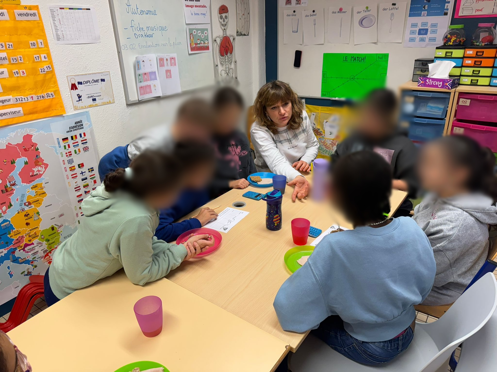
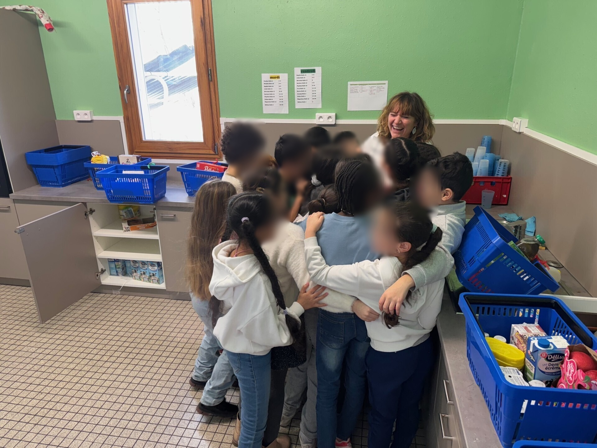

Céline Haller
Professeure des écoles & créatrice du projet Un Bol à l’École
Une démarche pédagogique reconnue, née du terrain, au service du bien-être, des apprentissages et de la réduction des inégalités.
Je suis professeure des écoles en éducation prioritaire à Strasbourg depuis 2012 et enseignante depuis 2007.
Je suis la créatrice du projet Un Bol à l’École, un dispositif pédagogique autour du petit déjeuner, reconnu pour son impact éducatif et social.
En parallèle de mon métier d’enseignante, j’interviens aujourd’hui auprès d’enseignants, de collectivités, de fondations et de médias pour partager cette expérience de terrain et accompagner des projets éducatifs.
Grâce à ce projet, j'ai été sélectionnée dans le 10 finalistes mondiaux du Global Teacher Prize en 2025. Il a également obtenu le 1er Prix de l'Innovation en promotion de la Santé Mentale et relationnelle en 2023.
Carte mentale
Cliquer sur un nœud pour afficher le détail.
Un Bol à l’École
Petit-déjeuner • bien-être • apprentissages • égalité
Mon parcours
De la salle de classe aux conférences : une démarche ancrée dans le terrain, nourrie par la recherche et le dialogue avec les partenaires pour partager ce qui m'anime.
Qui je suis
Enseignante de terrain, je construis mes propositions à partir de ce qui se passe vraiment dans une classe : les besoins des élèves, les contraintes des équipes, les réalités des familles.

- Approche concrète des pratiques de classe
- Apports de la recherche en éducation et sciences sociales
- Dialogue avec collectivités, associations, fondations, chercheurs…
Repères de parcours
- Aujourd’hui — Professeure des écoles (REP+) à Strasbourg, mise en œuvre quotidienne du projet.
- Depuis plusieurs années — Création et développement du “petit déjeuner pédagogique” : cadre, outils, séances clés en main.
- Reconnaissance — Global Teacher Prize : Top 10, innovation éducative reconnue.
« Un Bol à l’École » — bien plus qu’un petit déjeuner
À partir d’un moment simple et universel — le petit déjeuner — un dispositif complet qui articule alimentation, bien-être, santé mentale, pédagogie innovante, apprentissages fondamentaux et lien avec les familles.
Une démarche pédagogique globale
« Un Bol à l’École » n’est pas une simple distribution de nourriture. C’est un temps ritualisé, pensé comme un support d’apprentissages :
- Langage oral et écrit
- Mathématiques à partir du réel (mesures, proportions, statistiques…)
- Sciences (nutrition, digestion, énergie, microbiote…)
- Compétences psychosociales (coopération, empathie, engagement, attention, persévérance, solidarité, estime de soi…)
- Éducation à la citoyenneté et à l’égalité
- Éducation au Développement Durable
- Renforcement de l'axe parentalité
- Renforcement de l'autonomie et de l'engagement de l'élève
Ce projet permet d’aborder de nombreux domaines liés aux apprentissages de façon concrète et véritablement efficiente et il a de réels effets sur la scolarité des élèves et leur bien-être à l’école ainsi que sur le mien ! Ce projet incarne la vision d’une école qui forme des enfants éclairés, engagés et pleinement acteurs de leur avenir.
Impact & déploiement
Le projet s’est progressivement diffusé au-delà de ma classe, puis de mon école, jusqu’à inspirer de nombreuses initiatives dans d’autres territoires (plus de 300 000 enfants bénéficient aujourd’hui de ce dispositif).

- Accompagnement d’écoles et de collectivités dans la mise en place du petit déjeuner à l’école
- Contributions à des ressources pédagogiques et formations pour enseignants
- Échanges réguliers avec des chercheurs et des acteurs de la lutte contre la pauvreté
Interventions
J’interviens auprès d’enseignants, de cadres de l’Éducation nationale, de collectivités, de fondations et d’associations — en France et à l’étranger.
Conférences inspirantes
30–60 minRécit d’une expérience de terrain : comment un geste simple peut transformer climat de classe, apprentissages et lien avec les familles.
- Colloques, journées d’étude, événements
- Adaptable à différents publics
- Avec ou sans échanges
Formations & ateliers
½ j / 1 jAccompagnement des équipes éducatives pour mettre en place ou enrichir des petits déjeuners pédagogiques en milieu scolaire.
- Cadre pédagogique & organisationnel
- Outils & séquences clés en main
- Échanges ancrés dans le réel
Accompagnement de projets
sur mesureDéploiement à l’échelle d’une école, d’une ville ou d’un réseau : du cadrage au suivi.
- Diagnostic & objectifs
- Co-construction du dispositif
- Suivi, évaluation, ajustements
Médias & témoignages
FR / ENTémoignage sur pauvreté, alimentation, bien-être à l’école, et rôle de l’enseignant dans la réduction des inégalités.
- Interviews, podcasts, reportages
- Tables rondes
- Réaction à l’actualité éducative/sociale
Médias
Une sélection de vidéos, podcasts, presse et ressources institutionnelles.
Me contacter
Pour une demande de conférence, de formation, d’accompagnement de projet ou une interview, vous pouvez utiliser le formulaire ci-dessous ou me contacter directement par e-mail.
Merci de préciser : type d’intervention (conférence, formation, accompagnement, reportage…), publics concernés, dates/période, et contexte (école, collectivité, fondation…).